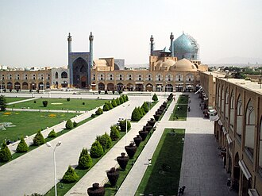

PrésentationتقديمOverview
La mosquée du Chah est un édifice religieux situé à Ispahan, construite pour le souverain safavide Chah Abbas Ier entre 1612 et 1630. Son architecte principal est Ali Akbar Isfahani. Après la révolution islamique de 1979, le bâtiment est également nommé Mosquée de l'Imam, en référence à Rouhollah Khomeini.
مسجد الشاه ويُعرف أيضًا باسم مسجد الإمام نسبةً إلى الإمام الخميني بعد عام 1979. مسجد جامع يقع في مدينة أصفهان الإيرانيّة، وتحديدًا في جنوب ساحة نقش جهان. يعود تاريخ تشييده إلى عام 1629، حيث يُعتبر من أهم المعالم الاثرية المتبقية من عهد شاه عباس الاول. تم تصنيفه على قائمة التراث العالمي التابعة لمنظمة الأمم المتحدة للتربية والعلم والثقافة (يونيسكو) إلى جانب ساحة نقش جهان في عام 2012.
The Shah Mosque, also officially known as the Imam Mosque or Imam Khomeini Mosque, is a mosque located on the south side of Naqsh-e Jahan Square in Isfahan, in the province of Isfahan, Iran. Its construction began in 1611, during the Safavid Empire under the order of Abbas the Great, and was completed c. 1630.
Şah Camii, Sultani Camii veya İmam Camii Nakş-ı Cihan Meydanı'nın güney tarafında duran İran'ın, İsfahan kentinden bir camidir. Şah Abbas tarafından 1611 yılında inşaatına başlanması için emir verdi. Cami Şah Abbas'ın saltanatının 20. yılında başlamış ve 18 yıl sonra bitmiştir.
Masjid Shah dikenal pula sebagai masjid Imam dan Masjid Jameh Abbasi yang merupakan sebuah masjid di Isfahan, Iran, berlokasi di sisi selatan Taman Naghsh-i Jahan. Masjid ini dibangun pada periode Safavi, dibawah perintah Shah Abbas dari Persia.
شاہ مسجد ایران کے شہر اصفہان میں میدان نقش جہان میں قائم ایک عظیم الشان عبادت گاہ ہے جسے ایران کی سب سے مشہور اور شاندار مسجد ہونے کا اعزاز حاصل ہے۔ یہ عظیم مسجد اپنے انوکھے طرز تعمیر کے باعث تمام شیعہ مسلم دنیا میں مشہور ہے۔
La Mezquita del Imam Jomeini, es una mezquita también conocida como la Mezquita del Imán, situada en Isfahán, fue construida safaví Shah Abbas I, entre los años 1612 y 1630. La Mezquita del Shah está situada en el lado sur de la plaza de Naghsh-i Jahan.
La moschea dello Scià è la principale moschea di Esfahan. Eretta nel 1629 al lato sud di Piazza Naqsh-e jahàn, una delle piazze più grandi del mondo, il cui complesso è stato dichiarato dall'UNESCO patrimonio dell'umanità nel 1979.
A Mesquita do Imã Khomeini ou Mesquita do Xá, é uma mesquita, também conhecida como Mesquita Real ou Mesquita Imã, localizada em Isfahan, no Irão construída para o soberano safavido Shah Abbas I, entre os anos 1611 e 1630. A Mesquita do Xá está localizada no lado sul da Praça de Naqsh-e Jahan.
De Moskee van de sjah (Masjid-i-Sjah) of de Koningsmoskee is een moskee in de Iraanse stad Isfahan. De moskee wordt ook wel de Moskee van de imam genoemd. Imam verwijst in dit geval naar ayatollah Khomeini.
샤 모스크(페르시아어: مسجد امام)는 엷은 파란색 타일로 멋지게 장식된 이슬람교 시아파 성원(聖院)으로 18,000,000개의 벽돌과 472,500개의 타일로 장식된 이란 건축 예술의 걸작품이다. 샤 성원(Shah Mosque)이라 불렸던 황실의 성원으로 아바스 황제에 의해 1612년 건설 시작하여 정문을 먼저 만들었고 아바스 황제가 완공을 보지 못하고 죽었지만 26년 동안 작업해 1638년 완공되었다. 30m의 으리으리한 정문, 높이 54m의 중앙 돔, 42m의 첨탑, 내부의 타일 장식과 사원의 거대한 규모가 사파비 왕조의 건축 양식을 확연히 보여준다. 이곳은 메카를 향해 세워져 방향이 틀어져 있고 빛에 따라 돔의 타일색이 변화하며 돔 중앙의 회색빛 돌위에서 바닥을 두들기거나 박수를 치면 7번의 울림을 경험하게 된다고 한다. 양쪽으로 난 홀과 돔의 공간이 성원의 음향 시설 역할을 한다.
Мечеть Имама, бывш. Мечеть Шаха — крупнейшая мечеть Исфахана, расположенная с южной стороны Площади Имама. Строительство начато в 1611 году, окончено — в 1641 году. Внутренние стены мечети оформлены уникальными рисунками, мозаикой, орнаментом и вязью. Общая площадь мечети — 20 000 м². Высота минаретов — 42 м, а главного купола — 52 метра, что делает Мечеть Имама высочайшим сооружением во всем городе.
มัสยิดชาห์ รู้จักกันในชื่อ มัสยิดอับบาซีแห่งใหม่ หรือ มัสยิดหลวง เป็นมัสยิดที่ตั้งอยู่ในเอสแฟฮอน, ประเทศอิหร่าน โดยอยู่บริเวณทางตอนใต้ของจตุรัสนักช์อี ญะฮัน มันถูกสร้างในสมัยราชวงศ์ซาฟาวิดภายใต้คำสั่งของชาห์อับบาสที่ 1 แห่งเปอร์เซีย และกลายเป็นที่รู้จักในชื่อ มัสยิดอิหม่าม ตั้งแต่หลังเหตุการณ์การปฏิวัติอิหร่าน.
Ang Masjid Shah ay isang masjid na matatagpuan sa Isfahan, Iran. Matatagpuan ito sa timog na bahagi ng Plaza Naqsh-e Jahan. Ito ay itinayo sa panahon ng dinastiyang Safavid sa ilalim ng atas ni Shah Abbas I ng Persia. Kilala rin ito bilang Masjid Imam pagkatapos ng Himagsikang Irani.
Shahmoskén, benämnd Imammoskén efter revolutionen 1979, är en moské i Esfahan i Iran. Den anses vara en av de vackraste moskéerna i världen och är registrerad som ett världsarv av UNESCO. Den ansluter till Naqsh-e Jahantorget, som är ett av världens största torg. Byggnationen av moskén började 1611 med entréportalen och "avslutades" med kupolen 1629, det sista året för beställaren Shah Abbas styre.
Moscheea Șahului sau Masjid-e Shah este o moschee din orașul Isfahan, din Iran. Ea este una dintre cele mai frumoase moschei din lume și este una dintre cele mai mari capodobere ale arhitecturii islamice din Iran.
Sur la carteعلى الخريطةOn the map
Documents et liensوثائق وروابطDocuments and links
- Wikipédia — Français
- Wikipédia — العربية
- Wikipédia — English
- Wikipédia — Türkçe
- Wikipédia — Bahasa Indonesia
- Wikipédia — اردو
- Wikipédia — Español
- Wikipédia — Italiano
- Wikipédia — Português
- Wikipédia — Nederlands
- Wikipédia — 中文
- Wikipédia — 한국어
- Wikipédia — Русский
- Wikipédia — ไทย
- Wikipédia — Filipino
- Wikipédia — Svenska
- Wikipédia — Română
- Wikidata — Q643098
Données : Wikidata (CC0), mises à jour tous les 3 mois. L'année est la plus ancienne date de construction connue du bâtiment : pour un édifice devenu mosquée plus tard (comme Sainte-Sophie), c'est celle du bâtiment d'origine. Photos : Wikimedia Commons, auteur et licence sur la page de chaque photo.البيانات: ويكي بيانات (CC0)، تُحدَّث كل 3 أشهر. السنة هي أقدم تاريخ معروف لبناء المبنى: فإن صار مسجدًا لاحقًا (مثل آيا صوفيا) فهي سنة المبنى الأصلي. الصور: ويكيميديا كومنز، المؤلف والرخصة في صفحة كل صورة.Data: Wikidata (CC0), updated every 3 months. The year is the earliest known construction date of the building: for a building that became a mosque later (such as Hagia Sophia), it is that of the original building. Photos: Wikimedia Commons, author and licence on each photo's page.
Grandes mosquées du mondeالجوامع الكبرى في العالمGreat mosques of the world →